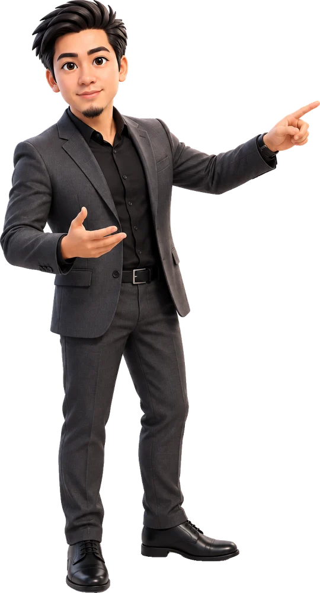
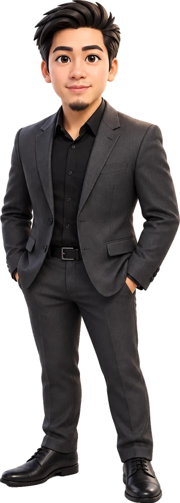

Google's open-source plugin for designing with full context and reviewing with none. Where it fits in Spec-Driven Development, and how it compares with Spec Kit and OpenSpec.
Agents produce code faster than a team can understand it. Bugs travel at the same pace.
Long sessions lose the thread. Decisions made in chat never reach the repository.
A reviewer who sat through the design conversation inherits its assumptions.
“Design is the new code.”
Dave Rensin, quoted by the EGM team on the Google Open Source Blog, October 2026
EGM's answer is to make the agent write a design document and defend it before any code exists.
Remembers everything
Remembers nothing
Make the architectural trade-offs, choose which findings to act on, and approve the specification before anything is implemented.
Illustration · Elephant rereads its own draft
Memory fills every gap in the text, so the gaps stay invisible.
Illustration · Goldfish reads the same draft
It reads the page literally. Anything that lived only in the conversation shows up as a question.
If a Goldfish cannot explain the design back, the document is ambiguous and goes back to drafting.
Answer a finding in the doc, then run a new Goldfish. Explaining it in chat turns the reviewer into a second Elephant.
A spec that survives a reader with no context can be handed to a coding agent with no context.
The Elephant interviews you. Fresh reviewers attack the idea through seven lenses.
Section by section, pausing for your feedback. Ends with an implementation plan.
Zero-context reviewers check simplicity, clarity, design, fit with the code and readiness.
You decide what to address. The doc is patched, then reviewed again if needed.
Open a PR for peer review. The approved spec lives in the repository.
Your coding agent implements the approved design.
/egm-bootstrap creates or updates documentation for an existing codebase, so brownfield work starts with context.
/egm-drift-report compares checked-in docs with the current code. You choose whether the doc or the code changes.
/egm-review-loop runs reviewers and standards you pick, for documents that are not software designs.
The Elephant asks open-ended questions over several turns. No multiple-choice shortcuts.
It sums up the working hypothesis in two or three sentences. Nothing is spawned until you confirm.
Reviewers run in parallel. Their findings are de-duplicated and the brief is written.
You get the file path and the two or three biggest risks, then refine until the concept holds.
Publish the brief as an RFC, move on to /egm-draft, keep refining, or stop and keep the brief.
Could an existing library or service solve most of this?
What is the peak load and token budget? Will it hit quota ceilings?
Is the API or CLI intuitive? Are the errors actionable?
How do existing clients and data migrate, and how is rollback handled?
How will on-call triage an incident at 3 AM?
Will this be painful to maintain in two years?
Which trade-off is being treated as inevitable, and can it be designed away?
Output: concepts_brief.md, the agreed direction that /egm-draft turns into a design doc.
Questions condensed from the lens table in the brainstorm skill.
A skeptical architect asks whether this is the simplest design, and whether existing code could be reused.
A naive reader gets the document alone and flags undefined terms and missing background.
A hostile design critic attacks architecture, scale and unmitigated risk. Structure and style reviewers run beside it.
Re-audits whatever was added while answering stages 2 and 3, so fixes do not bloat the design.
A pragmatic tech lead checks file paths, signatures and tests, leaving no design decision to the implementer.
Runs the reviewers in parallel, removes duplicate findings and writes one consolidated report. You then work through it with /egm-resolve.
Reviewer personas and document standards are Markdown files in the repo. Teams can edit the rubrics to match their own rules.
Stages run in order, with a checkpoint after each; reviewers inside a stage run in parallel. You can also run the feature-spec stages or the implementation stage alone. The skill numbers these stages 5 to 9, after four setup steps.
The slash commands you run. Each is a modular capability.
Ten prompt files: Zoom Out, Comprehension, Design Critic, Implementation Readiness, Codebase Details, Structural, Style, Inventive Catalyst, the Synthesizer, and a bootstrap orchestrator.
Five versioned rubrics the reviewers load, including zoom-out, feature spec and implementation readiness.
User guides, plus approved design specs under docs/designs/.
Artifact-first. Skills do not dump long drafts or review logs into chat. Content goes to files or side-panel artifacts, and the skill points you there and waits.
| Skill | What it does |
|---|---|
| egm-brainstorm | Tests an idea with a seven-lens reviewer swarm and saves the brief |
| egm-draft | Compiles the design doc section by section |
| egm-review | Orchestrates the multi-stage Goldfish review |
| egm-resolve | Works through findings with you and patches the doc |
| egm-review-loop | Runs reviewers and standards you choose, for other documents |
| egm-bootstrap | Documents an existing codebase from the bottom up |
| egm-drift-report | Compares specs and READMEs with the code as it is now |
Build to the doc. Google's guide: if the output is far off, update the design doc and retry. A fresh session is a useful extra test that the doc stands alone.
Filter, then loop. Expect a lot of findings and choose which matter. Repeat until the readiness stage says go, then open a PR for a human reviewer.
Keep specs in the repo. Versioned designs give the drift report something to measure the code against.
Gives the Elephant something to remember on a repo that has no docs. It writes and verifies READMEs from the bottom up.
It writes documentation only, makes no commits, and re-reads every file it wrote to check it against the code. A person should still review the result.
/egm-bootstrap <path/to/project>
Specs rot when code moves on without them. The report scans the design folder and the code each doc references.
It looks for missing features, incomplete data models, logic shortcuts and architectural divergence, and writes a dated DRIFT_REPORT.md. Google's guide suggests a weekly run.
/egm-drift-report docs/designs/
A design-first workflow only holds if the designs stay trustworthy.
Bootstrap creates the first layer of written context. Drift reporting stops that context from going stale, so the next Elephant session starts from facts.
Layout recommended by Google's guide for where specs live. Both skills apply to software codebases only.
| Project rules | Explore | Specify | Spec review before build | Plan and tasks | Implement | Spec and code in sync | |
|---|---|---|---|---|---|---|---|
| EGM | review rubrics | brainstorm | design doc | zero-context Goldfish | plan inside the doc | hands off to your agent | drift report, bootstrap |
| Spec Kit | constitution | clarify | spec.md | analyze, checklists | plan.md, tasks.md | implement | converge |
| OpenSpec | config.yaml | explore | proposal, spec deltas | format validation, human review | design.md, tasks.md | apply | sync, archive, verify |
All three review the spec in some way. EGM is the one built around a reviewer that never saw the conversation.
| EGM | Spec Kit | OpenSpec | |
|---|---|---|---|
| From | Google engineers, Apache 2.0 | GitHub, MIT | Fission AI, MIT |
| Core idea | A context-rich author and reviewers with no context | A fixed pipeline from principles to code | Every change is a proposal with spec deltas |
| Flow | brainstorm → draft → review → resolve → implement | constitution → specify → plan → tasks → implement → converge | explore → propose → apply → sync → archive |
| Artifacts | concepts_brief.md, one design doc per feature | constitution.md, spec.md, plan.md, tasks.md | proposal.md, delta specs, design.md, tasks.md |
| Review | Adversarial, isolated subagents working from rubrics | Optional clarify, checklists and a cross-artifact consistency check | Human review of the change folder, plus format validation |

In Antigravity CLI and Claude Code, add the /egm: prefix, for example /egm:egm-brainstorm. In Codex, choose the skill from the skill picker.
The same memory that makes an agent a good author makes it a poor reviewer of its own work.
If a Goldfish cannot build a mental model from the doc, a coding agent will not build the right code from it.
Approved designs live in the repo, and a weekly drift report keeps them honest about the code.
EGM details checked against the repository at v0.1.1, 14 Nov 2026. Sources: Google Open Source Blog · google/elephant-goldfish-model · EGM architecture doc · EGM getting started · EGM harnesses · github/spec-kit · Fission-AI/OpenSpec · openspec.dev · All Things AI (slide 4, point 2)
